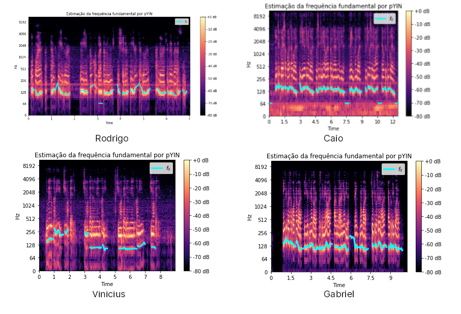

Audio descrição 👇
Relatório
Resultados e Conclusão

Figura 1: Espectros do grupo
Energias de voz da primeira estrofe: As energias dos áudios do Rodrigo, Caio e Vinicius têm um início em nível mais baixo para depois aumentarem e oscilarem, enquanto a energia do áudio do Gabriel começa elevada, atinge um vale e depois cresce e assume um caráter oscilatório como os demais.
Espectros Sonoros/Surdos:
- Caio: 30 sonoros e 11 surdos
- Gabriel: 26 sonoros e 5 surdos
- Rodrigo: 28 sonoros e 8 surdos
- Vinicius: 15 sonoros e 7 surdos